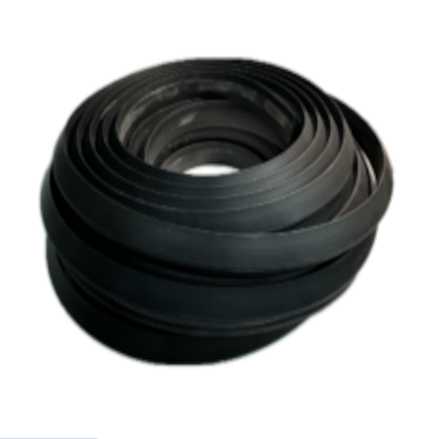
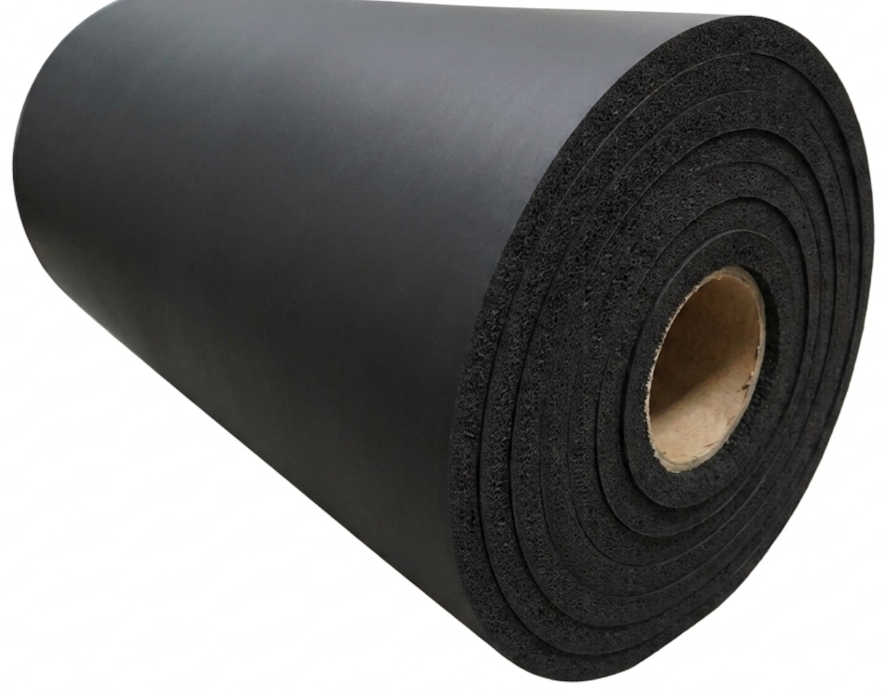
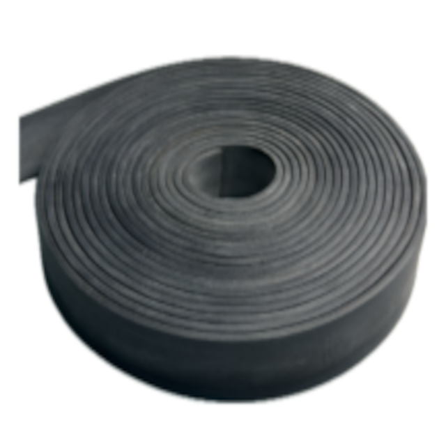
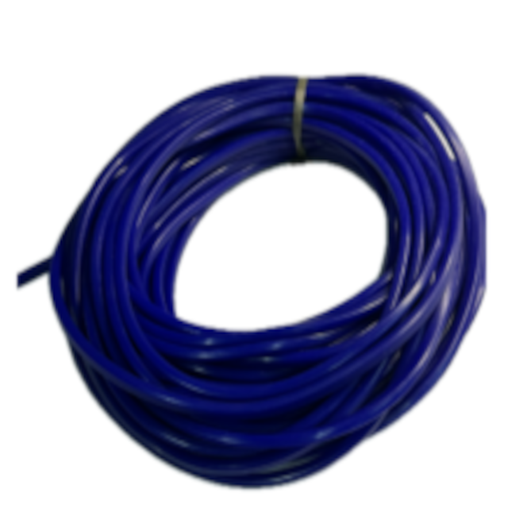
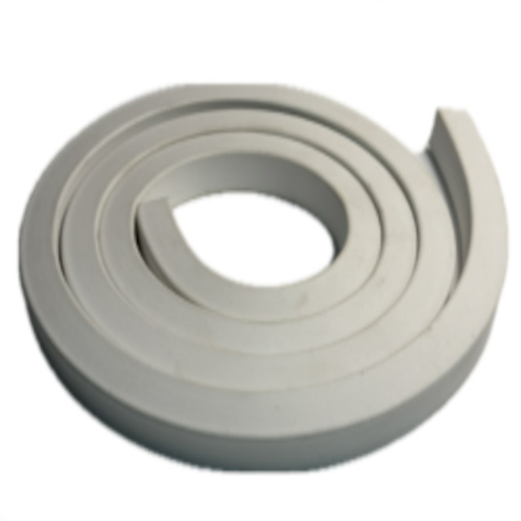
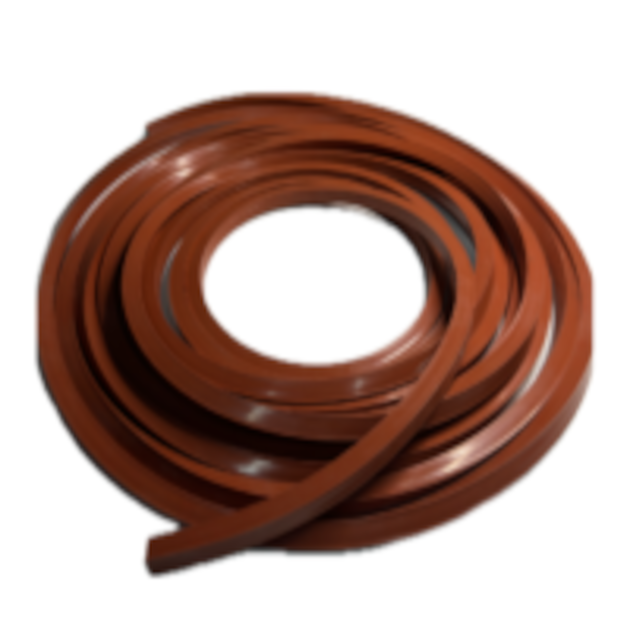

Perfis para Vedação Industrial
Desenvolvidos para oferecer vedação contínua, isolamento térmico, acústico e amortecimento contra impactos em portas industriais, estufas, painéis elétricos, containers e tubulações. Nossa linha conta com perfis maciços e esponjosos extrudados em elastômeros de alta performance, garantindo flexibilidade, excelente memória elástica e longa durabilidade.
Variações Disponíveis

Perfil de Borracha Maciço
Perfil extrudado denso em EPDM, NBR ou Neoprene. Oferece alta resistência mecânica, excelente vedação contra entrada de poeira e água, e resistência a intempéries em portas industriais e caixilhos.
Solicitar Cotação
Perfil de Borracha Esponjosa
Estrutura celular macia que exige baixo esforço de compressão. Ideal para vedação de portas herméticas, tampas de reservatórios e painéis onde a irregularidade das superfícies requer alta flexibilidade.
Solicitar Cotação
Perfil Esponjoso Multiuso
Desenvolvido para absorção de vibrações, amortecimento e vedação estática em estruturas metálicas, divisórias e cabines industriais, garantindo adaptação perfeita e vedação sem deformação permanente.
Solicitar Cotação
Perfil de Silicone Transmédico / Atóxico
Fabricado em silicone translúcido de grau alimentício e farmacêutico. Possui excelente estabilidade térmica e inércia química, sendo indicado para autoclaves, equipamentos hospitalares e linhas alimentícias.
Solicitar Cotação
Perfil de Silicone Esponjoso
Combina a facilidade de compressão do material celular com a elevada resistência térmica do silicone. Perfeito para vedação de estufas, fornos industriais e seladoras de embalagens.
Solicitar Cotação
Perfil de Silicone Vermelho (Alta Temp.)
Formulado especialmente para suportar temperaturas extremas contínuas. Utilizado na vedação de dutos de ar quente, portas de caldeiras, estufas de secagem e tubulações térmicas industriais.
Solicitar CotaçãoFicha Técnica Geral - Perfis para Vedação Industrial
| Especificação | Detalhes |
|---|---|
| Polímeros Base: | Silicone (VMQ), EPDM, Borracha Nitrílica (NBR), Neoprene (CR) e Viton (FKM). |
| Tipos de Estrutura: | Maciça (densa para elevada rigidez) e Esponjosa (microcelular para baixa força de compressão). |
| Dureza (Perfis Maciços): | 40 a 80 Shore A (conforme especificação da aplicação). |
| Densidade (Perfis Esponjosos): | 0,25 a 0,80 g/cm³, oferecendo alta flexibilidade e memória elástica. |
| Faixa de Temperatura: | -40°C a +120°C (EPDM/NBR) / -60°C a +220°C contínuos, com picos de +300°C (Silicone Vermelho). |
| Geometrias Disponíveis: | Formatos em "U", "V", "E", "P", Quadrados, Retangulares, Tubulares, Esféricos e perfis sob medida. |
| Aplicações Típicas: | Vedação de Estufas, Fornos, Painéis Elétricos, Cabines de Pintura, Portas Frigoríficas, Autoclaves e Janelas Industriais. |
| Normas Atendidas: | FDA 21 CFR 177.2600 (Silicone Atóxico), DIN 7715 E2/E3, ISO 3302-1 e normas automotivas/ferroviárias sob consulta. |